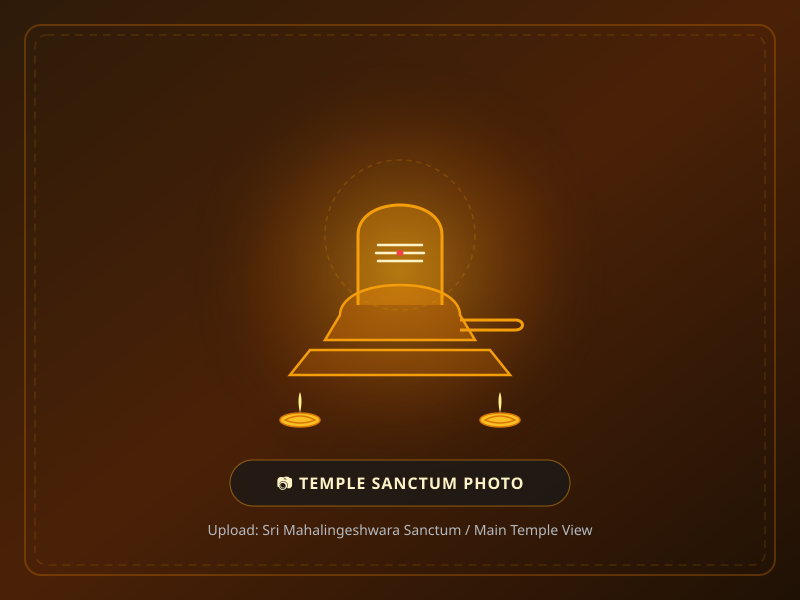
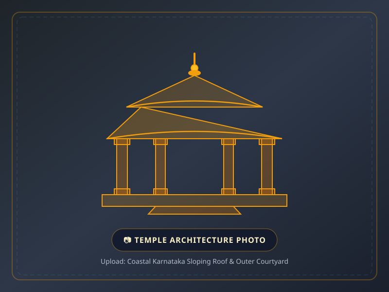
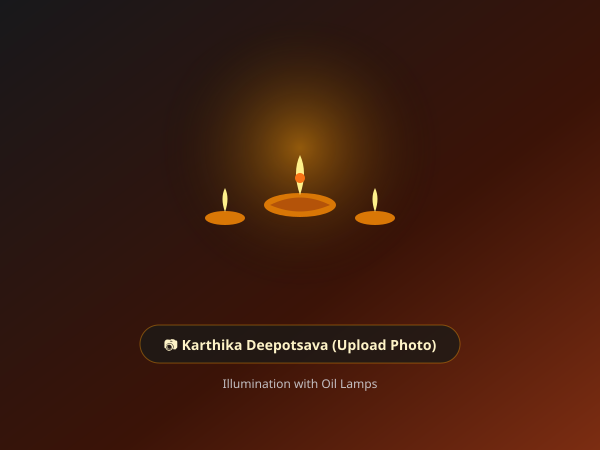
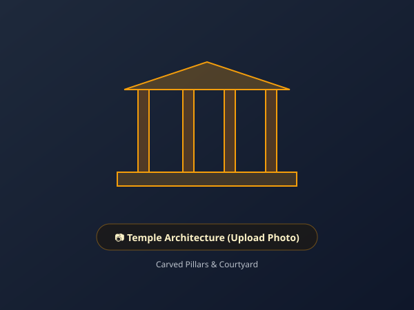
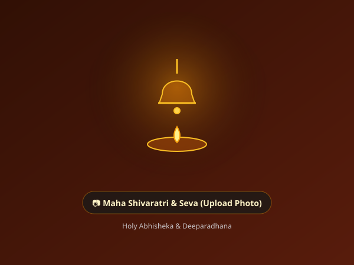

Welcome to Sacred Adyar Kshetra
Sri Mahalingeshwara Temple, located in Adyar near Mangaluru, is a revered spiritual haven dedicated to Lord Shiva in his benevolent form as Mahalingeshwara. Enveloped by lush coastal greens and a tranquil rural atmosphere, it has served as the spiritual pillar of the local community for generations.
Devotees flock to this sacred kshetra seeking peace, blessings, and spiritual renewal, drawn by the profound serenity that pervades the temple precincts.
- Presiding Deity: Lord Sri Mahalingeshwara (Lord Shiva)
- Deeply rooted in Tulunadu coastal temple traditions and rituals
- Serene, uplifting atmosphere ideal for peaceful meditation & family darshan
- Daily traditional Archana, Abhisheka, and Mahapooja offerings
Traditional Temple Architecture
The temple showcases classic coastal Karnataka architecture, distinguished by its gently sloping tiled roofs engineered to harmoniously withstand heavy monsoon rains, supported by sturdy timber frameworks and carved stone pillars.
Within the inner sanctum (Garbhagriha), the sacred Shiva Linga is enshrined upon a holy Peetha, enveloped by the divine aura of flickering brass lamps (Deepam) and fragrant sandalwood paste. The circumambulation pathway (Pradakshina Patha) offers devotees a soulful walk of prayer and reflection.
- Classic coastal sloping roof structure with sacred Kalasha pinnacles
- Carved wooden pillars and stone plinths showcasing local craftsmanship
- Shrines for Parivara Devatas including Lord Ganapathi and Subrahmanya

Annual Rathotsava & Utsavas
The annual Rathotsava (Brahmarathotsava / Car Festival) is the grandest celebration at Sri Mahalingeshwara Temple, celebrated during the auspicious Tulu month of Meena (March – April). Devotees gather in thousands to witness the ceremonial flag hoisting (Dhwajarohana) and pull the ornately decorated wooden chariot with profound devotional fervor.
The festival comes alive with mesmerizing traditional Yakshagana dance-dramas, percussion ensembles (Chende & Vaadya), devotional bhajans, and vibrant night fireworks (Vedi).
- Annual Rathotsava: Grand chariot procession and community celebrations
- Maha Shivaratri: Night-long Rudrabhisheka, sacred chants & Akhanda Bhajans
- Karthika Deepotsava: Temple illuminated with thousands of glowing oil lamps
- Pradosha & Sankranti: Special Shiva pujas and archana sevas
Darshan & Pooja Schedule
Devotees are welcome every day. Experience divine tranquility during early morning and evening aarti.
Morning Darshan
- 6:30 AM: Usha Kala Pooja & Nirmalya Visarjana
- 8:30 AM: Abhisheka & Archana Sevas
- 12:30 PM: Mahapooja & Noon Aarti
Evening Darshan
- 6:00 PM: Deeparadhana & Evening Prarthana
- 7:30 PM: Ratri Pooja & Mangalarathi
- 8:15 PM: Sanctum Closes for the Night
Special Sevas & Days
- Mondays (Somavara): Special Rudrabhisheka to Lord Shiva
- Pradosha Pooja: Evening twilight Abhisheka & Bilva Archana
- Sankashti: Dedicated Ganapathi Pooja offerings
Devotees are requested to wear traditional modest attire. Please maintain sanctity and peace on the temple premises. Photography inside the inner sanctum (Garbhagriha) is strictly prohibited.
Visual Glimpses
Moments of faith, devotion, and celebration at Sri Mahalingeshwara Temple, Adyar.



Note: Devotee photos will appear here once uploaded. Click any photo to preview in full screen.
Location & Directions
Sri Mahalingeshwara Temple is conveniently situated in Adyar, on the eastern outskirts of Mangaluru city, close to the picturesque Netravati river basin along the Mangaluru-Bengaluru highway (NH 75 / NH 73).
The temple is easily reachable by city buses, autorickshaws, and private cabs from Mangaluru Central, Junction, and state highway routes.